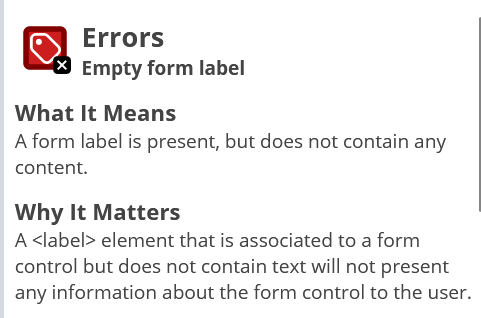

-
"sko"


Jeg prøvde først å søke etter pene sko, pensko, i område Østfold - siden det er det nettstedet heter og butikker befinner seg i Østfold. Jeg bestemte meg å droppe pensko/ pen sko siden det ga ikke så mange reslutater. Noe som ga dårlig resultater. Jeg valgte derfor å søke etter "sko" i hele Norge. Analysen viser at søkeored sko er populært hos norske befolkning, i sammenligning med andre ord som pensko eller festsko viser det seg at "sko" er fortsatt mer populært enn de spesifikke ord. Jeg velget derfor å bruke "sko" som en av mine nøkkel ord. Med full forståelse at dette nøkkelored har bredd betydning og kommer til å gi mange andre nettsteder som treff. Nettstedet mitt er ikke kjent og derfor tenker jeg at den må ha ogås et nøkkelord som er populært.
-
"damesko"

Analysen viser at spesifikasjon damesko er også svært populært hos norske. Nettbuttiken kommer til å ha i sin asortiment for det meste dame sko, derfor velger jeg også å ha nøkkelord "damesko"
-
"salg sko"


Siden kommer til å ha "fast"/regelmessige tilbud/salg, jeg har prøvd begge varienter og det viser seg at den enne var bedre enn den andre. Derfor landet jeg på den siste nøkkelord "salg sko"
På denne siden fines det dokumentasjon på analysen av Dine Pene Sko nettstedet.
Nøkkelord undersøkelse
SEO analyse
-
Index.html

Bilde presenterer scores av SEO analyse, Accessability og Best Practises av index.html siden

Accessibility score på 91. Error som vises er:
Links do not have a discernible name. Må forbedres for å: "These are opportunities to improve the semantics of the controls in your application. This may enhance the experience for users of assistive technology, like a screen reader."
Heading elements are not in a sequentially-descending order. Må forbedres for å: "These are opportunities to improve keyboard navigation in your application."
Best Practises score på 95. Errors som vises er:
Browser errors were logged to the console. Må forbedres for å: "Errors logged to the console indicate unresolved problems. They can come from network request failures and other browser concerns"

SEO score på 92. Error som vises er:
Document does not have a meta description. Må forbedres for å: "Format your HTML in a way that enables crawlers to better understand your apps content."
-
Produkt.html
Bilde presenterer scores av SEO analyse, Accessability og Best Practises av produkt.html siden

Accessibility score på 86. Errors som vises er:
Links do not have a discernible name. Må forbedres for å: "These are opportunities to improve the semantics of the controls in your application. This may enhance the experience for users of assistive technology, like a screen reader."
Heading elements are not in a sequentially-descending order. Må forbedres for å: "These are opportunities to improve keyboard navigation in your application."
Select elements do not have associated label elements. Må forbedres for å: These are opportunities to improve the semantics of the controls in your application. This may enhance the experience for users of assistive technology, like a screen reader.

Best Practises score på 95. Errors som vises er:
Browser errors were logged to the console. Må forbedres for å: "Errors logged to the console indicate unresolved problems. They can come from network request failures and other browser concerns"
SEO score på 90. Error som vises er:
Document does not have a meta description. Må forbedres for å: "Format your HTML in a way that enables crawlers to better understand your apps content."
-
profil.html

Bilde presenterer scores av SEO analyse, Accessability og Best Practises av profil.html siden

Accessibility score på 93. Errors som vises er:
Links do not have a discernible name. Må forbedres for å: "These are opportunities to improve the semantics of the controls in your application. This may enhance the experience for users of assistive technology, like a screen reader."

Best Practises score på 95. Errors som vises er:
Browser errors were logged to the console. Må forbedres for å: "Errors logged to the console indicate unresolved problems. They can come from network request failures and other browser concerns"

SEO score på 89. Error som vises er:
Document does not have a meta description. Må forbedres for å: "Format your HTML in a way that enables crawlers to better understand your apps content."
UU analyse
-
Index.html

Bilde av UU analyse på index siden - summary

Bilde av UU analyse på index siden - nettsiden
Bilde av UU analysen på index siden - details
1 Error: Empty form label
3 Error: Empty link
Contrast error
1 Alert: Skipped heading level
3 Alert: Broken same-page link
-
Produkt.html

Bilde av UU analyse på produkt siden - summary

Bilde av UU analyse på produkt siden - nettsiden

Bilde av UU analysen på produkt siden - details
1 Error: Empty form label
3 Error: Empty link
Contrast error
1 Alert: Skipped heading level
3 Alert: Broken same-page link
2 Alert: Orphaned form label
1 Alert: Skipped heading level
-
profil.html
Bilde av UU analyse på profil siden - summary
Bilde av UU analyse på profil siden - nettsiden
Bilde av UU analysen på profil siden - details
1 Error: Empty form label
3 Error: Empty link
Contrast error
3 Alert: Broken same-page link
ChatGPT analyse
-
SEO

Bilde av ChatGPT analyse - index siden

Bilde av ChatGPT analyse - produkt siden
Bilde av ChatGPT analyse - profil siden
-
UU

Bilde av ChatGPT analyse - index siden
Bilde av ChatGPT analyse - produkt siden
Bilde av ChatGPT analyse - profil siden
Sammenligning av resultater
| ChatGPT | Lighthouse | Webaim |
|---|---|---|
| SEO
Meta tags - legg til. Lenker - sørg for lenker er riktig format Semantisk HTML - bruk semnatisk HTML-kodeing bilder - sørg for beskrivelse 'alt' Sosiale medier - sørg for at sosiale medielenker er korekt koblet Responsivt design - test nettsiden på ulike enheter Nettsetdsytelse - optimaliser bilde- og filstørrelser for reskere sidelasting Innholdskvalitet - sørg for innholdet ditt er relevant |
SEO
Document does not have a meta description. |
SEO
Empty form label Empty link Alert: Skipped heading level Alert: Broken same-page link Alert: Select missing label Alert: Orphaned form label |
| UU
Kontrastforhold - sørg for tekst og bakgrunn har tilstrekkelig kontrast Skjermlesevennlighet -bruk semantiske HTML-elementer riktig. Tastaturnavigasjon - sørg for alle interaktive elementer er tastaturnavigerbare og fokusstyrte. Bilder og multimedier - inkluder beskrivende 'alt'-attributter for alle bilder Skalering og responsivitet - design nettsiden slik at den skalerer jevnt på ulike enheter og skjermstørrelser Tydelige lenker og knapper - sørg for at lenker og knapper er tydelige og ankle å identifisere. |
UU
Links do not have a discernible name Heading elements are not in a sequentially-descending order Browser errors were logged to the console Select elements do not have associated label elements. |
UU
Contrast errors: very low contrast |
Relevante funn.Er det noen ting som lighthouse reagerer på som ikke blir nevnt av chatGPT og visa versa?
forbedringstiltak
-
Webaim - UU error - Kontrast
3 Contrast errors: very low contrast.
Feilen var rettet ved å endre css. Reslutet: ingen error på kontrast.
-
Webaim - SEO error - Empty link
3 Error: Empty link.
Error var rettet med hjelp av 'aria-label' attrubutt som ble satt in i 'a href'. Metoden var fant på nett. Etter å sette inn attributtet error forsviner - det vises ARIA-attributt. Har på bilede kun en av feilene ble rettet for å se om det fungerer.

-
Webaim - SEO error - Empty form label
1 Error: Empty form label.
Error var fikset med hjelp av "aria-label" atributt, metoden var fant på nett. Error vises ikke lenger, vises ARIA-attrubitt isteden for.


-
Webaim etterpå
Etter å ha rettet på alle feilene på webaim, analysen ser slik ut:
-
Lighthouse etter webaim
Etter fiksing av error på web aim ser lighthouse slik ut
Index siden: 2 Error å fikse.
Error for å fikse:Heading elements are not in a sequentially-descending order
Error for å fikse: Browser errors were logged to the console
Profil siden: 1 error å fikse
Error for å fikse:Browser errors were logged to the console
Produkt siden: 3 error å fikse.
Error for å fikse:Select elements do not have associated label elements.
Error for å fikse:Heading elements are not in a sequentially-descending order
Error for å fikse:Browser errors were logged to the console
-
Fiksking lighthouse problemer.
Error for å fikse:Heading elements are not in a sequentially-descending order
Error ble fikset på slik måtte på både produkt siden og index siden
Error for å fikse:Select elements do not have associated label elements.
Error ble fikset ved å "wrape" elementer i section inn i "label"
Error for å fikse:Browser errors were logged to the console
Del 3: Bruk av ARIA-attributter og skjermlesere Skjermleserkompatibilitet: Test nettstedet med skjermlesere og identifiser utfordringer. Dokumenter det på analyse.html siden
DEL 3 Tilgjengelighet
-
Skjermleser

Jeg har testet nettstedet med skjermleser tilgejengelig for windows. Siden nettstedet mitt har html lang="nb" leser den for det meste de norsk teggene og ord greit.
Problemmet oppstår når han kommer til de enkete ord på engelsk - da er det litt vanskelig å forstå.
Tiltak: legge til lang="en" der det trenges.
Resultat: Mye lettere å forstå de enkelte deler.
-
Tastaturnavigasjon

Tastaturnavigasjon ble opprettet gjennom kode. det ble lagt inn skip til hovedinnhold snarvei på alle 3 sider.Informasjon ble tatt av UU sine sider.
-
ARIA-attributter
Brukte ARIA-attributter ved forbedrings tiltak på webaim
Del 4: Microdata og Rich Results Legg til fornuftig microdata pa produkt.html siden. Dette ma valideres og fungere i google sin test for rikeresultater.
Microdata
-
Google richresults test
Bilder viser ulike error som må rettes
-
Schema.org test
Bilde viser test av den samme nettsiden på schema.org - ingen error.
-
Rasulteter etter forbedringstiltak i både Richresults og schema.org
Bilder viser resultatet etter forbedringstiltak i både Richresults og schema.org. Det ble added itemprop 'image', 'manufacturer', added div section hvor jeg flytett 'offers'-biblioteket, added contant'price'
Meta og SOME Optimalisering av meta-tags: Oppdater titteltags og metabeskrivelser med relevante søkeord. Og legg til spesifikk meta-data for ulike SOME(Instagram, Facebook). Dette skal gjøre pa alle sidene, alle sidene skal ha metadata tilpasset innholdet pa siden.
Meta og SOME
-
Index.html

Bilde av meta index
-
Produkt.html

Bilde av meta produkt
-
Profil.html

Bilde av meta profil